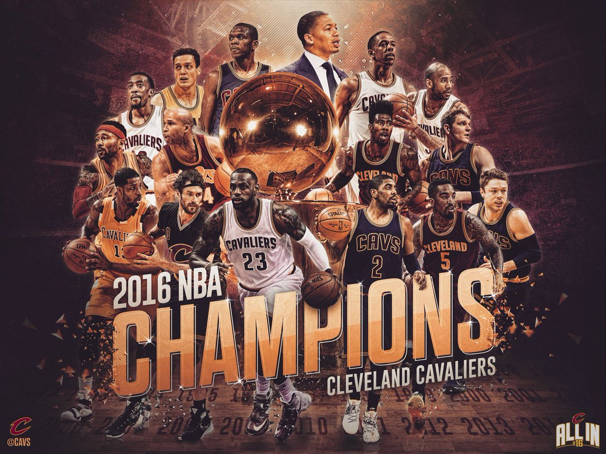

Let 'em know
The Cleveland Cavaliers are a storied franchise and are well known for being the team that drafted a generational talent in Lebron James back in 2003. They won the 2016 NBA championship and ended an infamous sports curse on the city that had lasted over 50 years. After 4 straight years of finals appearances, Lebron left for L.A. in 2018. The GM, Koby Altman, managed to draft and trade well and has transformed the team from a garbage fire in 2018 into a top 5 team in the league after only 5 years time. After clinching a playoff spot in 2023, the Cavs are set to make real noise in the playoffs this year now that they are lead by the young core of Darius Garland, Donovan Mitchell, Evan Mobley, and Jarret Allen.
Links to Team Info
- Cavs page on ESPN : The primary Cavs page on ESPN for updated statistics, game schedule, and player highlights.
- Playoff Picture: A page displaying playoff chances, team elo, with current standings updated daily
- Roster: The current Cavaliers roster.
Photo of the most important moments in human history
Contact
If you want to get in touch with me to argue about whether the cavs are better than your team, you can use any of the following methods:
- Email: travis@gmail.com
- Phone: +1 (123) 456-7890
- Twitter: @travis
Player Statistics
| Jarret Allen, 13.5 PPG | Jarret Allen, 12.1 RPG | Jarret Allen, 1.9 BPG |
| Donovan Mitchell, 32.6 PPG | Donovan Mitchell, 6.4 RPG | Donovan Mitchell, 5.9 APG |
| Evan Mobley, 19.8 PPG | Evan Mobley, 9.7 RPG | Evan Mobley, 2.5 BPG |
Key Quotes of the Cavs
Here are some monumental quotes from cavs team members:
- "CLEVELAND, THIS IS FOR YOU" - lebron James
- "He got that DAWG in 'em" - Caris Levert
- "I didn't even know I broke a record" - Donovan Mitchell after scoring 71 points